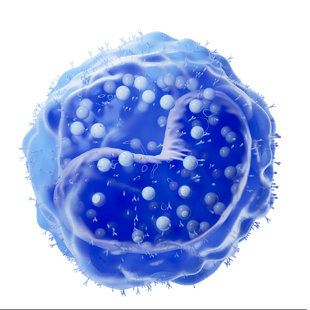
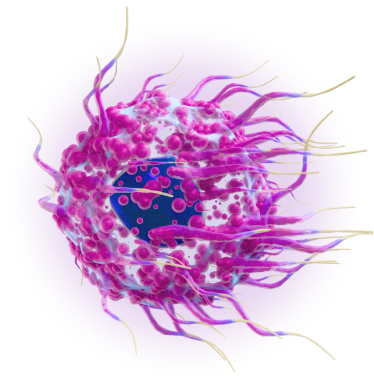
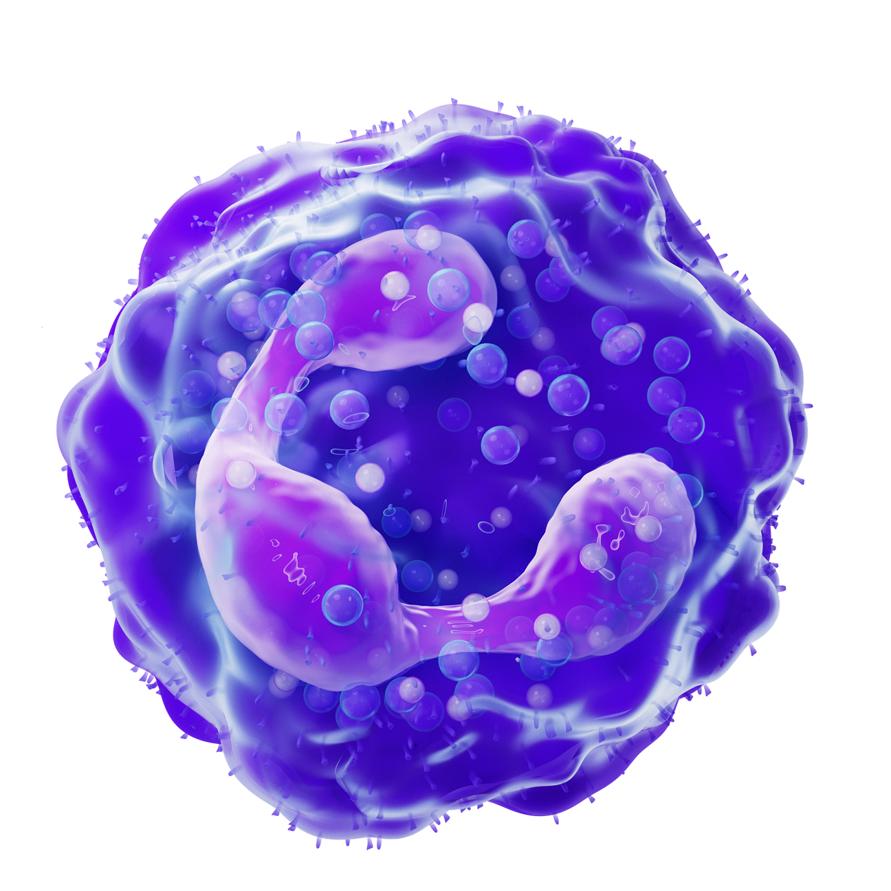
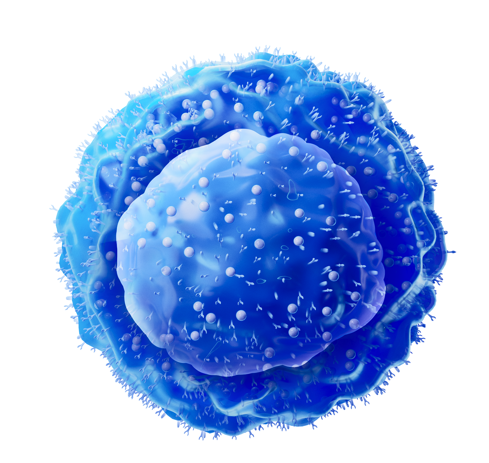
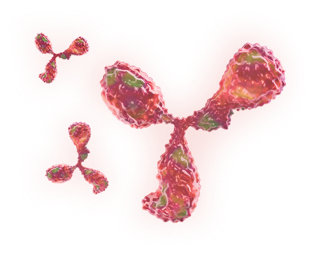

01
Общий обзор иммунной системы

03
Т-клеточный иммунитет

04
B-клеточный иммунитет

05
Три типа иммунных ответов

06
Иммунные нарушения при бронхиальной астме

07
Аутовоспалительные заболевания

08
Иммунодефицитные состояния и ВИЧ
